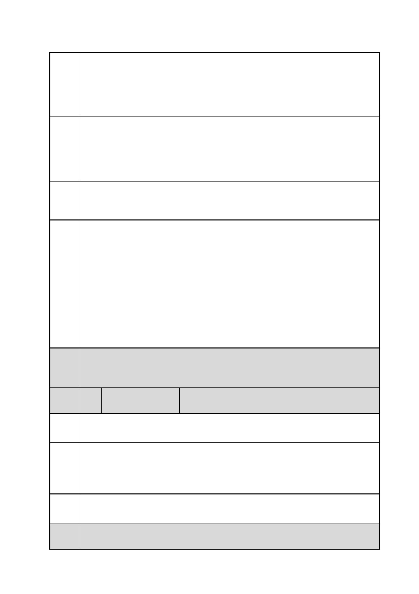

臺北市都市計畫委員會 公民或團體陳情意見綜理表
「變更臺北市信義區逸仙段二小段 33 地號等 21 筆土地（原臺北機廠）
案
名
工業區為創意文化專用區、特定專用區、道路及綠地用地主要計畫案」
及「擬定臺北市信義區逸仙段二小段 33 地號等 21 筆土地（原臺北機
廠）創意文化專用區、特定專用區、道路及綠地用地細部計畫暨劃定
都市更新地區計畫案」
建議
辦法
(二)同段同小段 33-14 地號土地，為高鐵隧道及繼電室使用（地下）。
(三)同段同小段 33-15 地號土地，為高鐵隧道及 26 號緊急逃生口使用
（地上）。
(四)同段同小段 33-7、33-28、33-29 地號等 3 筆土地，為高鐵隧道使
用（地下）。
為符土地使用，惠請貴府考量就前述 6 筆土地之土地使用分區納入
「兼供鐵路使用」或變更內容內酌予說明使用方式，俾符本局取得土
地之目的。
市府
回應
一、依都市計畫書規定，該等 6 筆土地均位於沿道路側指定留設 8
公尺帶狀式開放空間範圍內，不致影響現況為高鐵隧道及緊急逃生出
口等設施使用。
二、另依都市計畫書規定，該等 6 筆納入計畫範圍土地，因實際地下
作高鐵隧道使用，高鐵持分部分毋須回饋，亦不計入建蔽率及容積率
檢討。
三、查細部計畫都市設計管制準則之三、公共開放空間系統(五)已有
註明「經高鐵隧道穿越之土地，除供地鐵、捷運或高速鐵路設置通風
口、緊急出入口及地面層相關機電設施等地面突出物外，應結合毗鄰
建築基地採整體規劃設計為原則，開闢為帶狀式公共開放空間」。
委員
會議 內容同編號 1。
決議
編
號
陳情
理由
5 陳情人
張○梅
請不要蓋美術館，美術館是要拿來放展覽品的，但臺北機廠的建築並
不適合作這樣的設計。
建議
辦法
市府
回應
請改建為鐵道博物館保存臺北機廠鐵道文化資產的完整性，或參考美
國紐約的 highline ，在不破壞原建築、原遺址的情況下做改造。一樣
會吸引很多民眾，帶動週邊發展的。http ://en.wikipedia.ord/wiki/High
Line (New York City)
同編號 2 市府回應內容。
委員
會議
內容同編號 1。
第 18 頁/共 154 頁